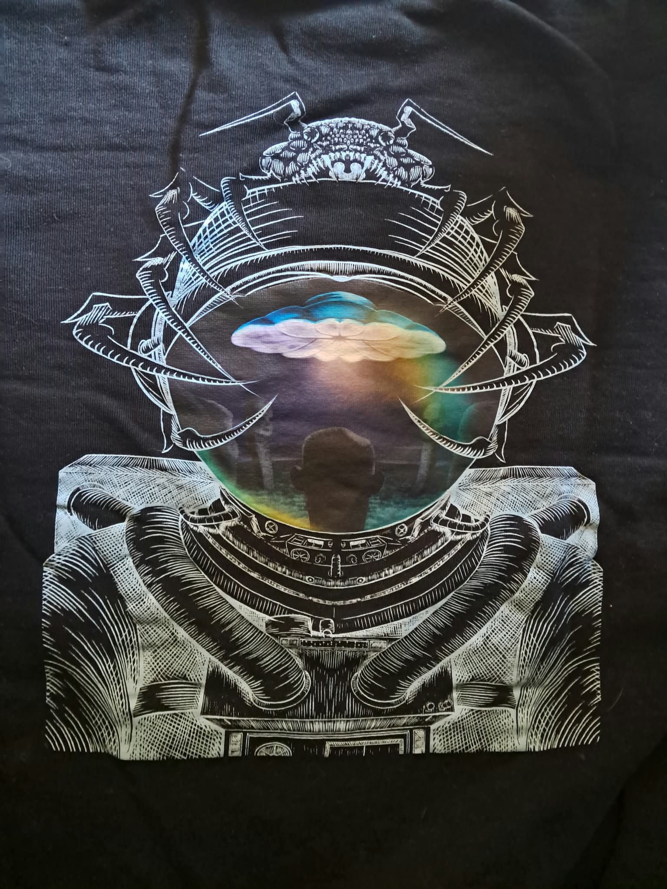
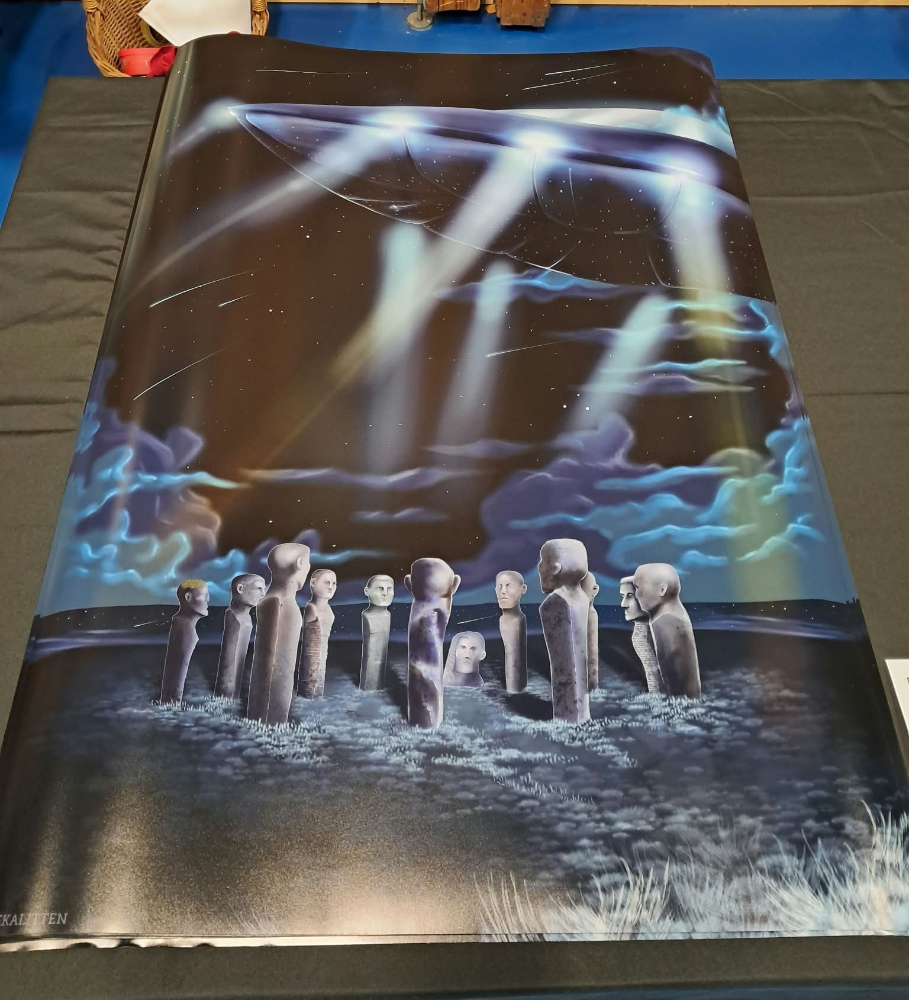

Semester 1.
Adventure game
A game about exploration and puzzels. Made by 3 people for a school project where we learned about worldbuilding, user expirence, colors and much more.
Try the game

Every project starts with a question, an idea, or a problem to solve. Here's a look into my process and what I've learned along the way.
A game about exploration and puzzels. Made by 3 people for a school project where we learned about worldbuilding, user expirence, colors and much more.
Try the game
Every great design begins with understanding the problem.
This project challenged me to turn an initial idea into a digital experience. I started by exploring the target audience and researching how the design could communicate the right message.
I experimented with layouts, colours and typography before settling on a visual direction. Along the way, I learned how important it is to test ideas rather than committing to the first solution.
A visual novel horror game, about public transportation. We learnd about coding in HTML, CSS and sound/music
Making something look good is only part of the process.
I wanted to explore how design choices influence the way people interact with a website. My focus was creating an experience that felt intuitive without losing its personality.
I worked with wireframes, visual references and iterations to find a balance between aesthetics and usability. This taught me to consider the user's perspective throughout the design process.
I made a Landingpage, with a visual novel like game, which explains world building through world building.
Exploring the connection between creativity and code.
For this project, I wanted to experiment with more interactive elements and find ways to make a digital experience feel more personal.
I combined visual experimentation with coding, learning through trial and error. The biggest lesson was that technical challenges can open the door to new creative possibilities.
Interactive poster and buisness, made in four weeks. Everything is handmade.
Exploring the connection between creativity and code.
For this project, I wanted to experiment with more interactive elements and find ways to make a digital experience feel more personal.
I combined visual experimentation with coding, learning through trial and error. The biggest lesson was that technical challenges can open the door to new creative possibilities.
plceholder text for sure.
Exploring the connection between creativity and code.
For this project, I wanted to experiment with more interactive elements and find ways to make a digital experience feel more personal.
I combined visual experimentation with coding, learning through trial and error. The biggest lesson was that technical challenges can open the door to new creative possibilities.



Participation in the UFO-convention in Maribo Denmark
Exploring the connection between identity and visual communication.
In 2025 and 2026, I participated in the UFO Fair, representing Dodekalitten in 2025 and with Thomas Kadziola in 2026. For both events, I worked on graphic design, developing designs for clothing prints and in 2026 print and posters.
I was given the opportunity to explore the creative direction of the designs, with a focus on achieving a simple yet visually engaging result. For the clothing print I chose a black-and-white line drawing as the central element, using color exclusively in the astronaut’s helmet. This created a natural focal point and added contrast to the design while preserving its minimalist aesthetic. It was also important to me to create a design with lasting appeal, rather than an oversized print that might quickly lose its relevance. My aim was to develop a distinctive graphic design that could stand on its own visually while working effectively as a print on clothing.
I applied the same concept to the poster, aiming to create a design that could stand on its own without being overly busy, allowing the stones to remain the main focus. My design approach was heavily inspired by the night and the sense of mystery surrounding Dodekalittens identity as a mysterious and energy-filled work of art.


.png)
Collaboration with the team behind Dodekalitten, for the inauguration in 2026.
Exploring the connection between identity and visual communication.
From the summer of 2025 until the inauguration of Dodekalitten in 2026, I volunteered to promote running events organised in connection with the inauguration. Initially, there were also plans to incorporate role-playing activities into the event, but these plans were later put on hold. Following this decision, I shifted my focus towards raising awareness of the running events and encouraging participation through visual communication and graphic design.
Throughout my work, I placed particular emphasis on developing a visual style that complemented the natural surroundings and artistic universe of Dodekalitten. The aim was to create a visual connection between the promotional materials and the site's distinctive identity.
As part of the project, I was given the opportunity to design a certificate of participation. My design process was inspired by Dodekalittens visual identity, particularly the circle as a central graphic element. Building on this concept, I developed a certificate featuring rounded shapes and images of each individual stone. The stones held particular significance in the design, as the Greenlandic stone had been inaugurated shortly before the official inauguration of Dodekalitten.
This project allowed me to explore how graphic design and visual communication can support a project and establish a cohesive visual identity across promotional materials and event-related design.
A glimpse into my creative universe.
A collection of my favourite creative moments, bringing together visual design, illustration and interactive experiences.
Explore how I combine creativity, storytelling and technology to bring ideas to life.